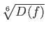
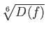

Ambainis' Theorem has shown itself to be remarkably versatile in
proving lower bounds on Boolean functions; it can frequently be used
to establish asymptotically tight lower bound with little effort.
These lower bounds can be contrasted with classical lower bounds to
see areas where a quantum computer could significantly outperform a
classical computer. For all the functions we have examined the
separation found between the best known quantum and classical lower
bounds is a polynomial. Beals et al. proved
 ()
oracle queries are required to compute an arbitrary Boolean function
f with decision tree complexity D(f ) in the bounded error setting
[2]. Therefore there can be no exponential
separation between the classical and quantum oracle query complexity
for Boolean functions. It should be stressed that this result has
only been proven to hold in the quantum oracle model, only for total
Boolean functions, and only in the bounded error setting (which
includes the exact and zero error settings).
()
oracle queries are required to compute an arbitrary Boolean function
f with decision tree complexity D(f ) in the bounded error setting
[2]. Therefore there can be no exponential
separation between the classical and quantum oracle query complexity
for Boolean functions. It should be stressed that this result has
only been proven to hold in the quantum oracle model, only for total
Boolean functions, and only in the bounded error setting (which
includes the exact and zero error settings).
It is suggested by Beals et al. that the
 () lower bound on the number of
oracle queries required to compute an arbitrary total Boolean function
f is not optimal [2]. It remains an important
open question what the asymptotically tight lower bound is. In
Section 4.4 we proved
() lower bound on the number of
oracle queries required to compute an arbitrary total Boolean function
f is not optimal [2]. It remains an important
open question what the asymptotically tight lower bound is. In
Section 4.4 we proved
 (
( )
oracle queries are required to compute sensitive Boolean functions, if
the need for sensitivity could be eliminated it would give a better
lower bound than what is currently known.
)
oracle queries are required to compute sensitive Boolean functions, if
the need for sensitivity could be eliminated it would give a better
lower bound than what is currently known.
The importance of quantum computation itself will be quantified by the speedup allowed by quantum algorithms. If large classes of useful problems are found for which a quantum algorithm can provide exponential speedup, it will certainly drive interest in the construction of quantum computing devices. Shor's algorithm currently stands alone as a useful task that can be performed exponentially faster by a quantum algorithm than with the best published classical algorithm. There are many other problems that show this exponential separation, but the are toy problems tailored to display such speedup and have no practical application.
The current uniqueness of Shor's algorithm is a great enticement to further study. It is hard to believe that there is only one useful problem that we can find exponential speedup for; however, results such as the ones in this thesis seem to indicate that for many reasonable models of computation only polynomial speedup can be attained. In some way this parallels the results of Grover's algorithm which provides quadratic speedup over what is classically possible for the unordered search problem, but disallows any potential exponential speedup by its optimality.
Whether a quantum computer of a size great enough to perform useful calculations can be built is unclear, but great progress has been made. On December 19, 2001, IBM researchers announced they had factored the number 15 on a quantum computer running Shor's algorithm [12]. When tempted to prognosticate about the future of this nascent technology, it is instructive to examine predictions made around the time of the birth of the digital computer. In 1949 Popular Mechanics boldly posited:
Where ...the ENIAC is equipped with 18,000 vacuum tubes and weights 30 tons, computers in the future may have 1,000 vacuum tubes and perhaps weigh just one and a half tons[16].While the future of quantum hardware may be uncertain, a few quantum algorithms discovered so far are impressive. The discovery of fundamental tasks that can be performed quadratically faster in the bounded error setting than in the classical setting, such as computing the AND and OR of N bits, promise surprising results for more interesting problems in the future.